Tensor Core 与 CUTLASS
原文: Learn CUTLASS the Hard Way! by Kapil Sharma 许可证: CC BY 4.0 | 代码: gpusgobrr/explore-gemm 本文为原文的中文翻译与整理，交互式可视化部分已省略。
本文在 上一篇 warp tiling 的基础上，引入 Tensor Core、WMMA API、double buffering，最终过渡到 CUTLASS 库，并通过 swizzling、persistent kernel、autotuning 逼近 PyTorch 性能。
WMMA 与 Tensor Core
之前的 warp tiling 结构可以用 NVIDIA WMMA API（Warp Matrix Multiply-Accumulate）实现。WMMA 扩展了 tiling 结构并暴露 Tensor Core MMA 操作。
什么是 Tensor Core？
Tensor Core 提供 warp 级集体 MMA 操作：warp 中 32 个线程集体持有 MMA 操作数。换言之，线程级寄存器外积可以直接下降到硬件执行。
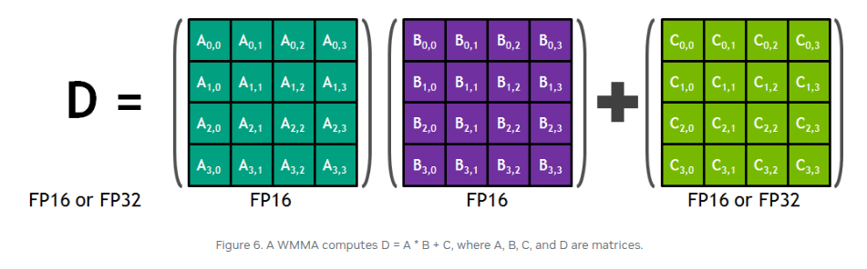
FP16 matmul + FP32 累加的典型用法：
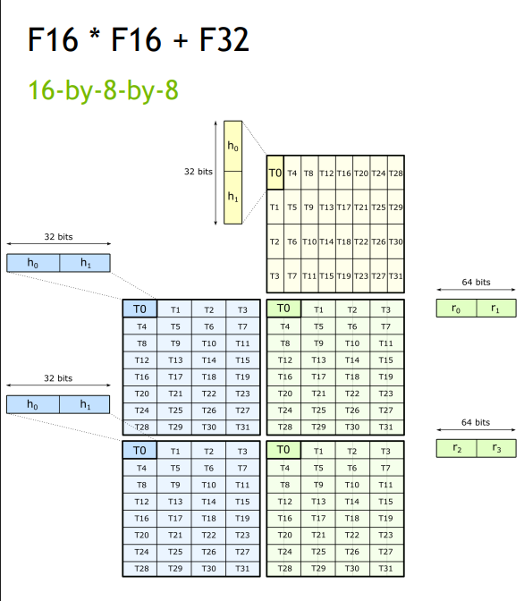
对应的 PTX 内联汇编：
float D[4];
uint32_t const A[2];
uint32_t const B;
float const C[4];
asm(
"mma.sync.aligned.m16n8k8.row.col.f32.f16.f16.f32 "
" { %0, %1, %2, %3 }, "
" { %4, %5}, "
" %6, "
" { %7, %8, %9, %10 };"
:
"=f"(D[0]), "=f"(D[1]), "=f"(D[2]), "=f"(D[3])
:
"r"(A[0]), "r"(A[1]),
"r"(B),
"f"(C[0]), "f"(C[1])
);
其中 mma.sync.aligned.m16n8k8.row.col.f32.f16.f16.f32 表示：
- 矩阵维度 M=16, N=8, K=8（计算 C[16×8] = A[16×8] × B[8×8] + C[16×8]）
row.col：A 行主序、B 列主序f32.f16.f16.f32：输出 FP32，A/B 为 FP16，累加 FP32
SM80 Tensor Core 指令
RTX 4090（Ada）上的 Tensor Core 操作：
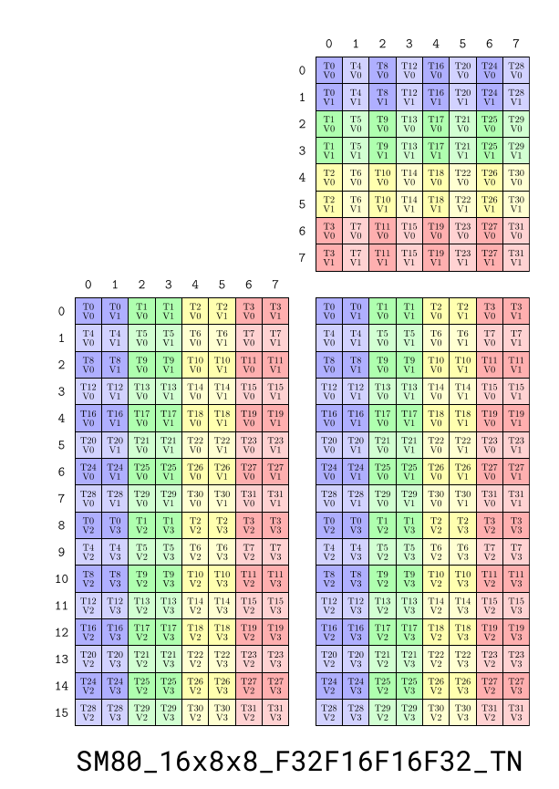
WMMA GEMM Kernel
NVIDIA 提供的 Tensor Core 指令集允许 warp 级 matmul——在单条指令中计算 thread tile 矩阵乘法。引用 CUTLASS 原文：
wmma::load_matrix_sync将 A 和 B 的 fragment 加载到nvcuda::wmma::fragment<>模板实例中，累加器元素结构化为nvcuda::wmma::fragment<accumulator>数组。最后，nvcuda::wmma::mma_sync()调用使用 Tensor Core 计算 warp 级 MMA 操作。
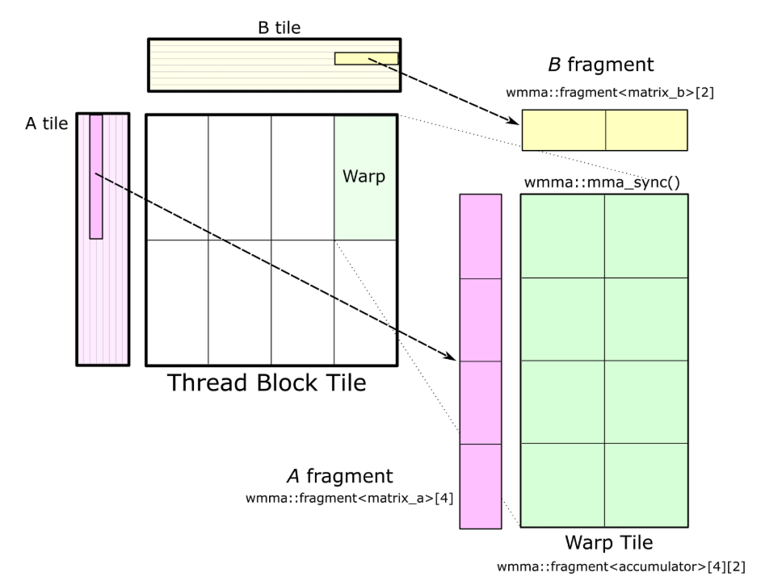
将之前的 warp tiling kernel 转换为 WMMA API，tile 大小直接映射：
template <typename InputType,
const int BLOCK_ROW_WARPS = 4,
const int BLOCK_COL_WARPS = 4,
const int WARP_ROW_TILES = 4,
const int WARP_COL_TILES = 2,
const int WMMA_M = 16,
const int WMMA_N = 16,
const int WMMA_K = 16>
__global__ void
sgemm_tensorcore_warptiled_kernel(int num_cols_b, int num_cols_a,
float alpha, const InputType *matrix_a,
const InputType *matrix_b, float beta,
float *matrix_c)
{
const uint warp_id = threadIdx.x / 32;
const uint warp_row = warp_id / BLOCK_COL_WARPS;
const uint warp_col = warp_id % BLOCK_COL_WARPS;
constexpr int BLOCK_ROW_TILES = WARP_ROW_TILES * BLOCK_ROW_WARPS;
constexpr int BLOCK_COL_TILES = WARP_COL_TILES * BLOCK_COL_WARPS;
constexpr int BM = BLOCK_ROW_TILES * WMMA_M;
constexpr int BN = BLOCK_COL_TILES * WMMA_N;
constexpr int BK = WMMA_K;
__shared__ InputType tile_a[BM * BK];
__shared__ InputType tile_b[BK * BN];
'''
WMMA fragment 声明
- a_frag: 行主序 A fragment
- b_frag: 列主序 B fragment（与 SMEM 布局匹配）
- acc_frag: FP32 累加器，每 warp WARP_ROW_TILES × WARP_COL_TILES 个
'''
nvcuda::wmma::fragment<nvcuda::wmma::matrix_a, WMMA_M, WMMA_N, WMMA_K,
InputType, nvcuda::wmma::row_major> a_frag;
nvcuda::wmma::fragment<nvcuda::wmma::matrix_b, WMMA_M, WMMA_N, WMMA_K,
InputType, nvcuda::wmma::col_major> b_frag;
nvcuda::wmma::fragment<nvcuda::wmma::accumulator, WMMA_M, WMMA_N, WMMA_K,
float> acc_frag[WARP_ROW_TILES][WARP_COL_TILES];
nvcuda::wmma::fragment<nvcuda::wmma::accumulator, WMMA_M, WMMA_N, WMMA_K,
float> c_frag;
for (int i = 0; i < WARP_ROW_TILES; ++i)
for (int j = 0; j < WARP_COL_TILES; ++j)
nvcuda::wmma::fill_fragment(acc_frag[i][j], 0.0f);
constexpr int NUM_THREADS = BLOCK_ROW_WARPS * BLOCK_COL_WARPS * 32;
'''
K 维循环：加载 tile → WMMA 操作
A: BM × BK 行主序，B: BK × BN 列主序（转置存储）
'''
for (int block_k_idx = 0; block_k_idx < num_cols_a; block_k_idx += BK)
{
for (int idx = threadIdx.x; idx < BM * BK; idx += NUM_THREADS)
{
int row = idx / BK, col = idx % BK;
int global_row = blockIdx.y * BM + row;
int global_col = block_k_idx + col;
tile_a[row * BK + col] = matrix_a[global_row * num_cols_a + global_col];
}
for (int idx = threadIdx.x; idx < BK * BN; idx += NUM_THREADS)
{
int row = idx / BN, col = idx % BN;
int global_row = block_k_idx + row;
int global_col = blockIdx.x * BN + col;
tile_b[col * BK + row] = matrix_b[global_row * num_cols_b + global_col]; // 转置
}
__syncthreads();
'''
Warp 级 WMMA 计算
每个 warp 处理 WARP_ROW_TILES × WARP_COL_TILES 个 16×16 tile
'''
for (int i = 0; i < WARP_ROW_TILES; ++i)
{
for (int j = 0; j < WARP_COL_TILES; ++j)
{
int a_tile_row = warp_row * WARP_ROW_TILES + i;
int b_tile_col = warp_col * WARP_COL_TILES + j;
nvcuda::wmma::load_matrix_sync(a_frag,
tile_a + (a_tile_row * WMMA_M) * BK, BK);
nvcuda::wmma::load_matrix_sync(b_frag,
tile_b + (b_tile_col * WMMA_N) * BK, BK);
nvcuda::wmma::mma_sync(acc_frag[i][j], a_frag, b_frag, acc_frag[i][j]);
}
}
__syncthreads();
}
'''
结果写回：C = alpha * (A * B) + beta * C
'''
for (int i = 0; i < WARP_ROW_TILES; ++i)
{
for (int j = 0; j < WARP_COL_TILES; ++j)
{
int global_row = blockIdx.y * BM + (warp_row * WARP_ROW_TILES + i) * WMMA_M;
int global_col = blockIdx.x * BN + (warp_col * WARP_COL_TILES + j) * WMMA_N;
float *c_ptr = matrix_c + global_row * num_cols_b + global_col;
nvcuda::wmma::load_matrix_sync(c_frag, c_ptr, num_cols_b,
nvcuda::wmma::mem_row_major);
for (int t = 0; t < c_frag.num_elements; ++t)
c_frag.x[t] = alpha * acc_frag[i][j].x[t] + beta * c_frag.x[t];
nvcuda::wmma::store_matrix_sync(c_ptr, c_frag, num_cols_b,
nvcuda::wmma::mem_row_major);
}
}
}
性能
Tensor Core warp tiling 比不带 TC 的版本有改进，且数值计算由 WMMA 抽象处理更好：
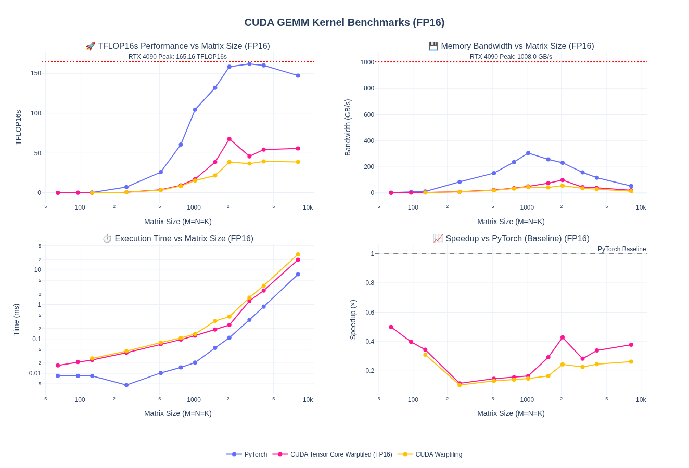
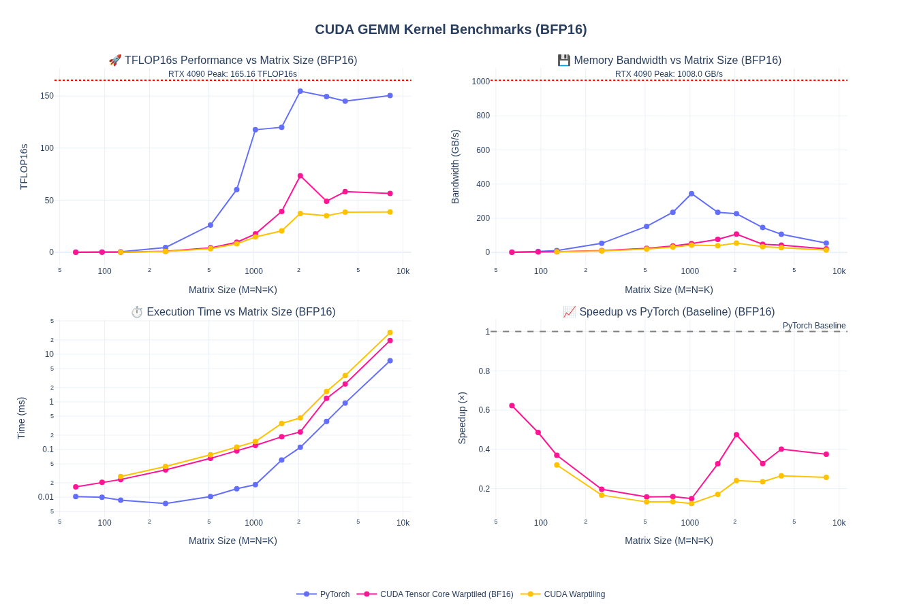
| Matrix Size | FP16 TFLOPS | BF16 TFLOPS | FP16 vs PyTorch | BF16 vs PyTorch |
|---|---|---|---|---|
| 1024×1024 | 17.3 | 17.5 | 17.8% | 14.9% |
| 2048×2048 | 67.9 | 73.4 | 42.8% | 47.5% |
| 4096×4096 | 55.4 | 58.2 | 34.4% | 40.1% |
| 8192×8192 | 55.9 | 56.5 | 38.7% | 37.5% |
NCU 验证
NCU profiling 确认了 Tensor Core 指令的使用：
不带 TC 的 BF16 Warp Tiling：使用 FMUL/FFMA 标量指令
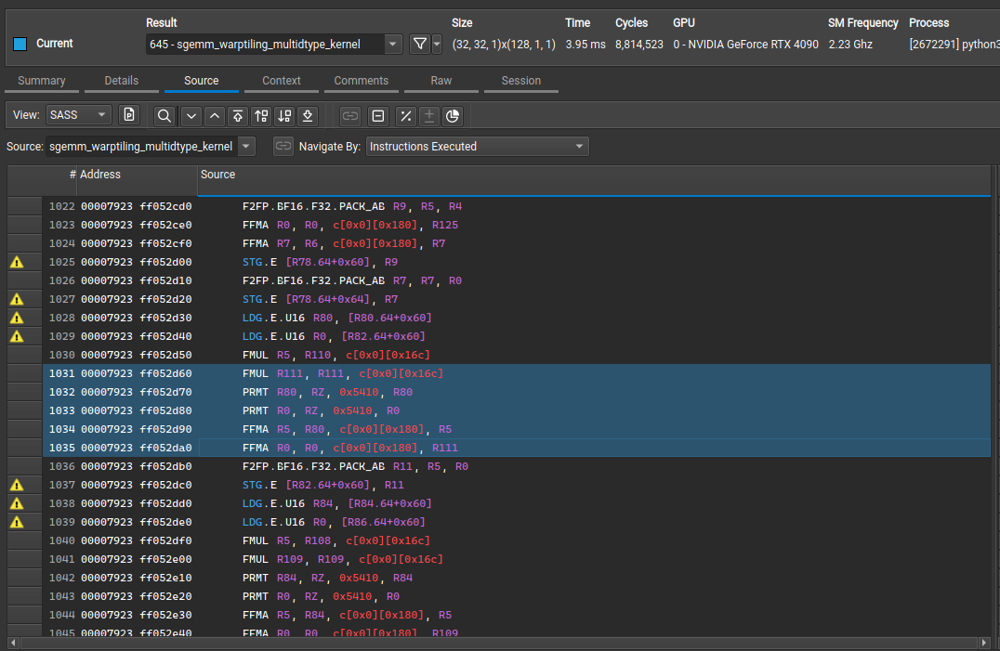
带 TC 的 Warp Tiling：使用 HMMA（Half-precision MMA）指令
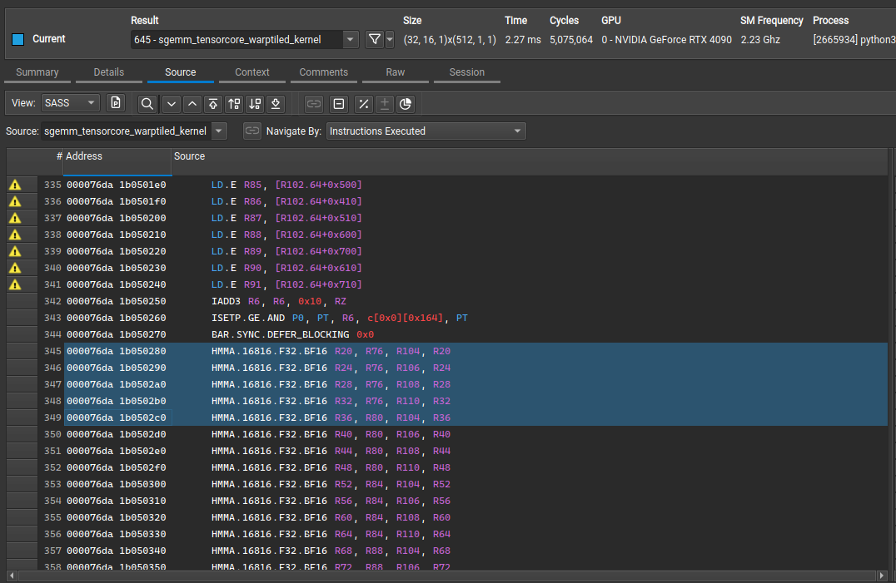
PyTorch matmul 的 NCU profile 也使用相同指令：
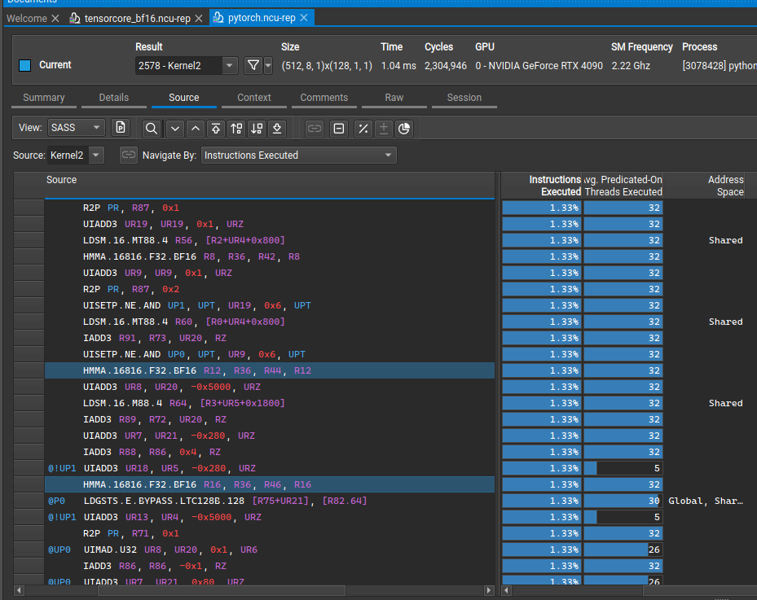
Double Buffering
如果把 matmul 看作异步问题，本质上是生产者-消费者问题。生产者尽快从 global → shared → registers 搬运数据，消费者尽快计算 MMA 指令。Double buffering 就是在一个 buffer 上计算的同时填充另一个 buffer。也叫 software pipelining——重叠内存访问与计算。
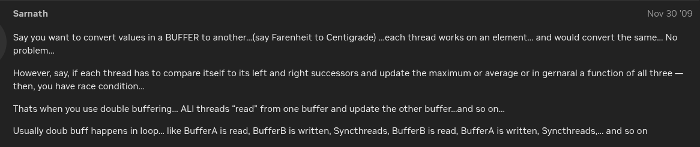
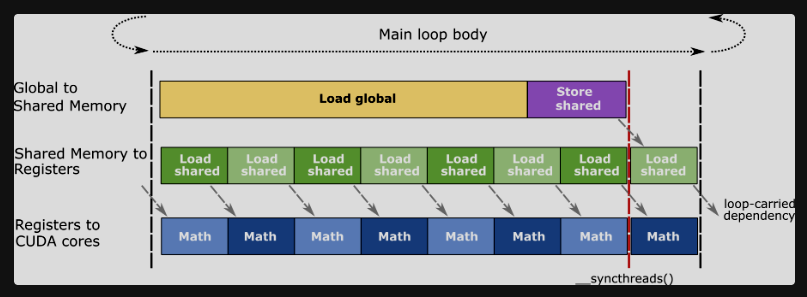
实现方式：创建两块 shared memory——一个读 buffer，一个写 buffer：
Kernel
核心思路：prologue 加载第一个 tile 到 buffer 0，主循环中从 read_buffer 计算的同时将下一个 tile 预取到 write_buffer：
int read_buffer = 0;
// Prologue: 加载第一个 tile 到 buffer 0
{
// ... 标量加载 tile_a[0] 和 tile_b[0] ...
}
__syncthreads();
// 主 K 循环
for (int block_k_idx = 0; block_k_idx < num_cols_a; block_k_idx += BK)
{
int write_buffer = read_buffer ^ 1; // 在 0 和 1 之间切换
// 预取下一个 tile 到 write_buffer（如果不是最后一轮）
if (block_k_idx + BK < num_cols_a)
{
// ... 加载 tile_a[write_buffer] 和 tile_b[write_buffer] ...
}
// 用当前 read_buffer 计算 WMMA
for (int i = 0; i < WARP_ROW_TILES; ++i)
for (int j = 0; j < WARP_COL_TILES; ++j)
{
nvcuda::wmma::load_matrix_sync(a_frag,
tile_a[read_buffer] + (a_tile_row * WMMA_M) * BK, BK);
nvcuda::wmma::load_matrix_sync(b_frag,
tile_b[read_buffer] + (b_tile_col * WMMA_N) * BK, BK);
nvcuda::wmma::mma_sync(acc_frag[i][j], a_frag, b_frag, acc_frag[i][j]);
}
__syncthreads();
read_buffer = write_buffer; // 切换 buffer
}
性能分析
Double buffering 带来了 30+% 的性能提升：
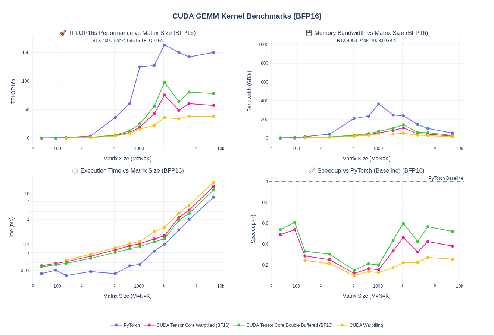
CUTLASS
现在有了足够的基础理解，可以使用 CUTLASS 了。经过之前 10+ 个 kernel 的铺垫，CUTLASS 代码变得不言自明——这正是整个"Hard Way"的目的。
什么是 CUTLASS
CUTLASS 最初是层次化 GEMM 结构的实现，提供高效 GEMM kernel 的 CUDA C++ 模板类。底层 tile loader 高效地在 global → shared → registers 之间搬运数据。此外还提供 Epilogue 等原语，可将下游操作（如逐元素操作、reduction）与 GEMM 融合。
CUTLASS 提供两套主要 API：
- Gemm API：cutlass::gemm::device::Gemm（CUTLASS 2.x 风格）
- Collective Builders API：cutlass::gemm::collective::CollectiveBuilder（3.x 风格）
本文使用 CUTLASS 2.x 的 Gemm API。
Kernel
#include "cutlass/cutlass.h"
#include "cutlass/gemm/device/gemm.h"
#include "cutlass/epilogue/thread/linear_combination.h"
using ElementAccumulator = float;
using ElementOutput = float;
using LayoutA = cutlass::layout::RowMajor;
using LayoutB = cutlass::layout::RowMajor;
using LayoutC = cutlass::layout::RowMajor;
using ThreadBlockShape = cutlass::gemm::GemmShape<128, 128, 32>; // BM, BN, BK
using WarpShape = cutlass::gemm::GemmShape<64, 64, 32>; // WM, WN, WK
using InstructionShape = cutlass::gemm::GemmShape<16, 8, 16>; // Tensor Core shape
template <typename InputElementType>
struct CutlassGemmConfig
{
using ElementInput = InputElementType;
using EpilogueOp = cutlass::epilogue::thread::LinearCombination<
ElementOutput,
128 / cutlass::sizeof_bits<ElementOutput>::value>;
using Gemm = cutlass::gemm::device::Gemm<
ElementInput, LayoutA,
ElementInput, LayoutB,
ElementOutput, LayoutC,
ElementAccumulator,
cutlass::arch::OpClassTensorOp,
cutlass::arch::Sm80,
ThreadBlockShape,
WarpShape,
InstructionShape,
EpilogueOp>;
};
using FP16Config = CutlassGemmConfig<cutlass::half_t>;
using BF16Config = CutlassGemmConfig<cutlass::bfloat16_t>;
template <typename Config>
cudaError_t cutlass_gemm_launch(
int M, int N, int K,
const typename Config::ElementInput *d_A, int lda,
const typename Config::ElementInput *d_B, int ldb,
ElementOutput *d_C, int ldc,
float alpha, float beta, cudaStream_t stream = nullptr)
{
typename Config::Gemm gemm_op;
typename Config::Gemm::Arguments args(
{M, N, K},
{d_A, lda}, {d_B, ldb}, {d_C, ldc}, {d_C, ldc},
{alpha, beta});
cutlass::Status status = gemm_op.can_implement(args);
if (status != cutlass::Status::kSuccess)
return cudaErrorNotSupported;
status = gemm_op.initialize(args, nullptr, stream);
if (status != cutlass::Status::kSuccess)
return cudaErrorUnknown;
status = gemm_op(stream);
return (status == cutlass::Status::kSuccess) ? cudaSuccess : cudaErrorUnknown;
}
性能分析
相比之前最好的 double buffered kernel，CUTLASS 性能几乎翻倍。大矩阵大小上接近 PyTorch：
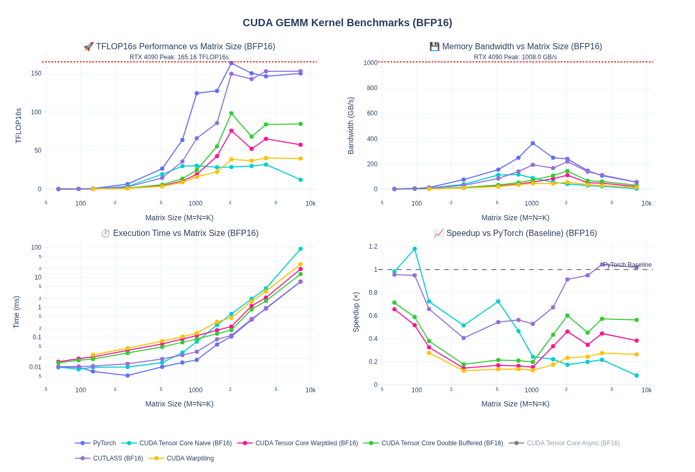
| Matrix Size | PyTorch TFLOPS | CUTLASS TFLOPS | CUTLASS vs PyTorch |
|---|---|---|---|
| 512×512 | 26.5 | 14.4 | 0.54× |
| 1024×1024 | 124.5 | 66.0 | 0.53× |
| 2048×2048 | 163.6 | 149.7 | 0.91× |
| 4096×4096 | 146.4 | 152.9 | 1.04× |
| 8192×8192 | 150.2 | 153.1 | 1.02× |
Gemm API 还有两个重要模板参数值得进一步探索：ThreadblockSwizzle_ 和 Stages。
Swizzling
Bank Conflict
Shared memory 分为 32 个 bank，每个 bank 每周期服务一个 32 位字。当 warp 中两个或更多线程访问映射到同一 bank 的不同地址时，访问必须串行化——导致性能损失。
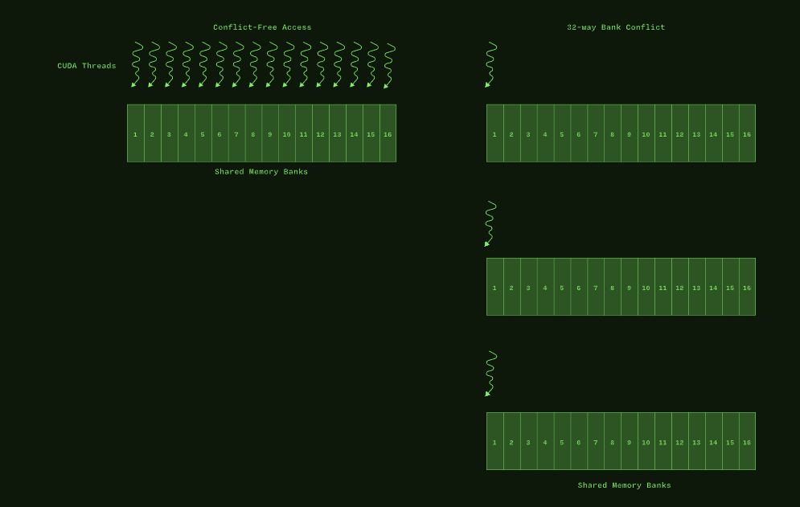
GEMM 中每个 thread block 反复将 A 和 B 的 tile 加载到 shared memory。由于加载高度结构化，朴素布局容易产生严重 bank conflict。
Swizzling 如何帮助？
Swizzling 是地址重映射技术——改变数据在 shared memory 中的布局以最小化 bank conflict。通过调整低位地址位，使同一 warp 中连续线程访问不同 bank。
线性布局：bank = (address / 4) % 32
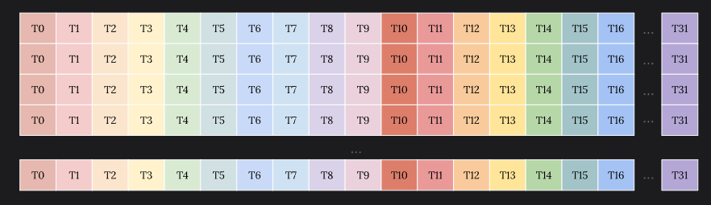
Swizzled 布局：(o / 32, (o % 32) xor (o / 32))
用 XOR 交换对，将相同数据重映射到不同内存位置：
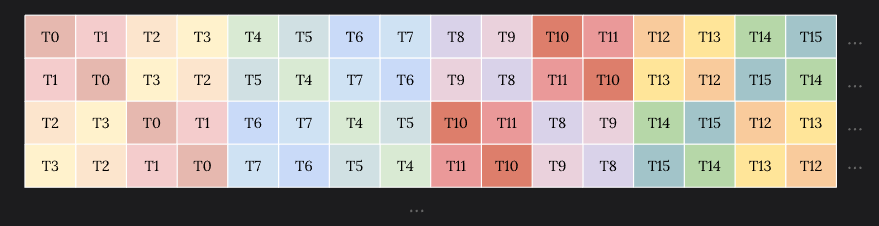
NVIDIA 文档中的更多 swizzling 模式：
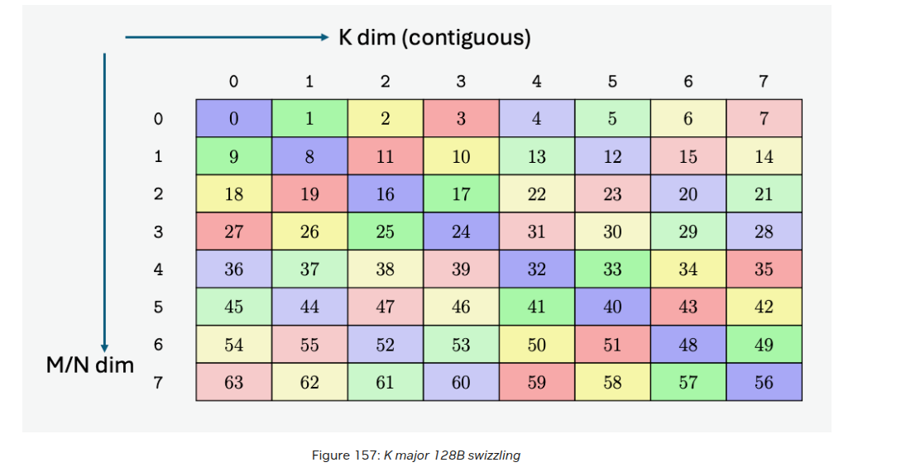
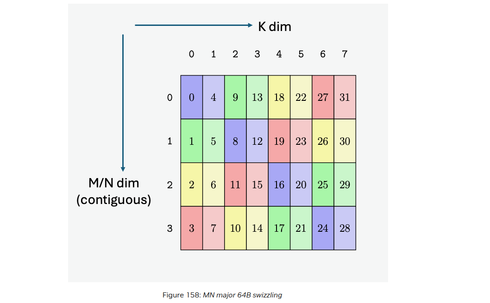
关键要点：为避免 bank conflict，将 shared memory 布局重映射为 swizzled 布局，确保线程不争用相同硬件资源（bank）。
Persistent Kernel / Software Pipelining
Software pipelining / persistent kernel 是 double buffering 的自然扩展——将 shared memory buffer 数量从 2 扩展到 N（N 级流水线）。
Persistent Kernel 的概念：GEMM kernel "保持活跃"，将不同的 stage 异步重叠。目标是让加载、计算、kernel 启动、epilogue、prologue 等持续运行：
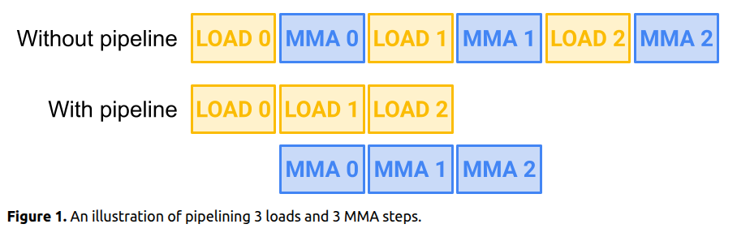
Phil Tillet（GTC 25）关于 Blackwell 上计算与加载重叠的演示：
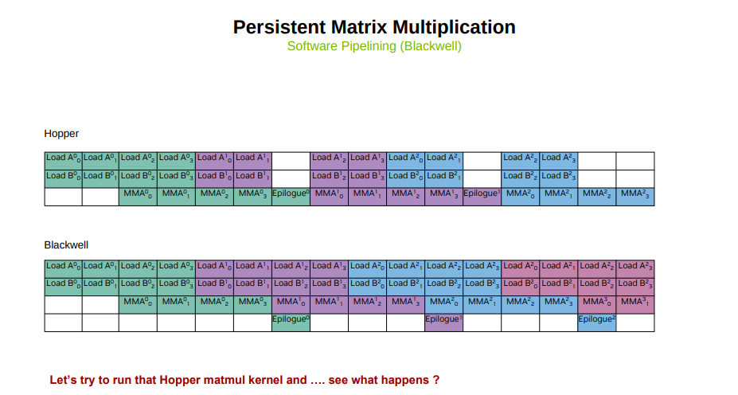
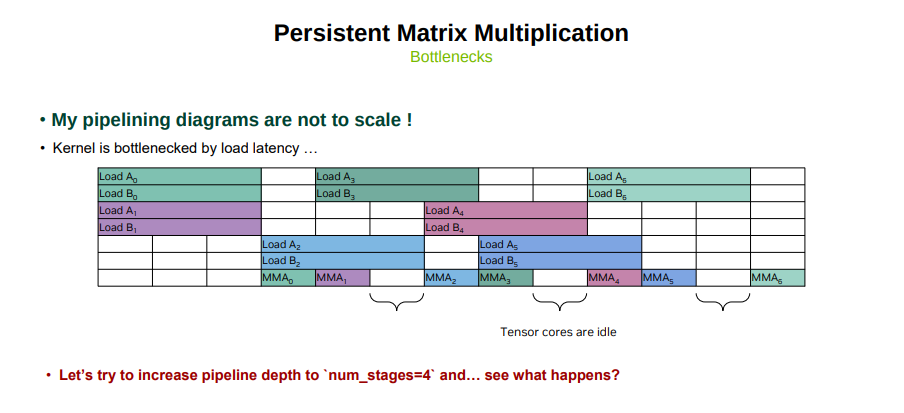
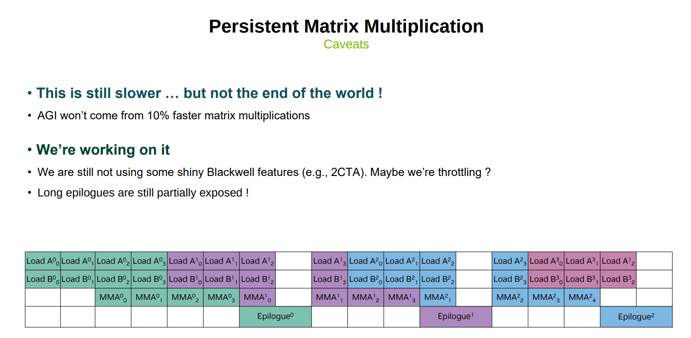
Autotuning
使用 autotuning 为不同 tensor 大小找最优配置。定义调优参数结构：
在 20 种不同 CUTLASS 配置中搜索，覆盖各种 tile 大小和 pipeline stage 数：
constexpr GemmConfigEntry kConfigs[] = {
{128, 256, 64, 64, 64, 64, 16, 8, 16, 3},
{64, 256, 32, 32, 64, 32, 16, 8, 16, 4},
{128, 128, 32, 64, 64, 32, 16, 8, 16, 4},
{128, 64, 32, 64, 32, 32, 16, 8, 16, 4},
// ... 共 20 种配置
};
Autotuning 结果
经过 autotuning，所有矩阵大小上都能一致超越 PyTorch：
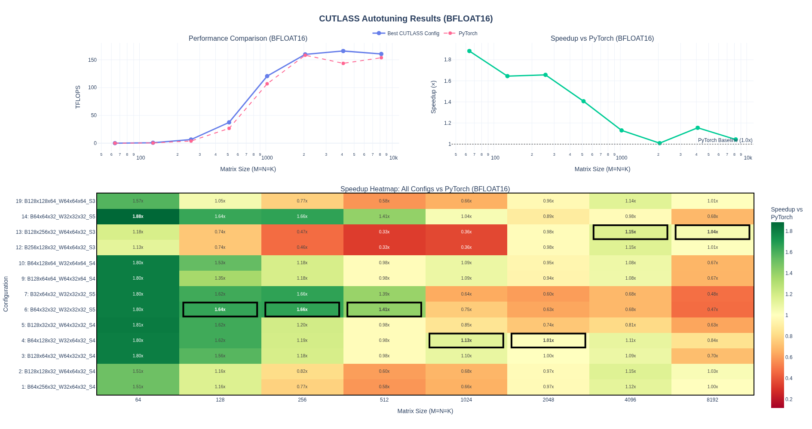
- 小矩阵（64-512）：发现比 PyTorch 快达 2.0× 的配置，较大 thread block（128×64×32）和 4-5 级 pipeline stage 效果好
- 中矩阵（1024-2048）：接近 PyTorch，加速比达 1.09×
- 大矩阵（4096-8192）：性能更好，最高 15% 加速
同时也对比了 Triton persistent kernel 实现，但性能较差（可能未针对该硬件完全优化）：
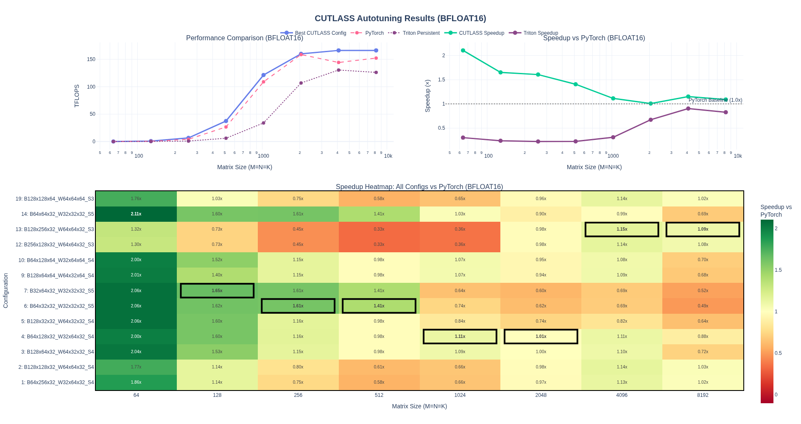
后记
本文的目标是从"shared memory cache"的 CUDA 教程层面深入到真正理解现代 GEMM 优化。后续探索方向包括：
- 在 Hopper 和 Blackwell 硬件上运行（见 下一篇）
- FP8 / MXFP4 / MXFP8 变体
- CUTLASS 3.x 和 4.x API
- CuTe Python DSL
- Grouped GEMM 等其他 kernel
参考资料
- Simon Boehm's CUDA Matrix Multiplication
- NVIDIA CUDA C Programming Guide
- CUTLASS: Fast Linear Algebra in CUDA C++
- Triton Tutorial: Matrix Multiplication
- Lei.Chat: Triton Linear Layout
- Colfax Research: CUTLASS Tutorial - Design of a GEMM Kernel
- Colfax Research: CUTLASS Tutorial - WGMMA on Hopper
- Outperforming cuBLAS on H100: a Worklog
- Modal GPU Glossary